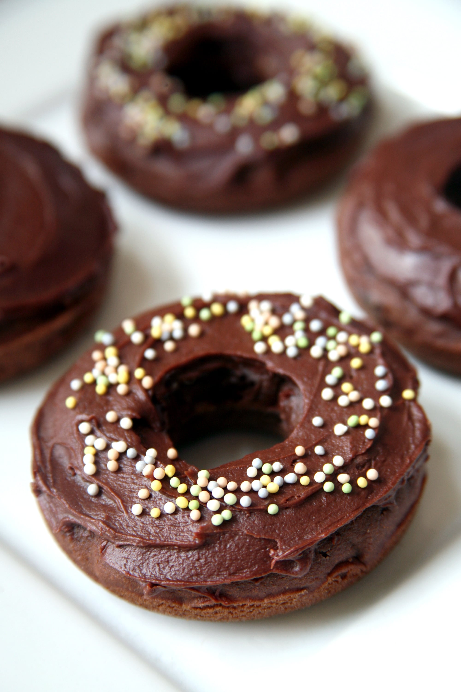

CHOCO LAVA DONUT
- Preheat the oven to 350F degrees. Spray a 6 cavity doughnut pan with non-stick cooking spray.
- In a medium bowl whisk together the flour, cocoa, baking soda and salt.
- In a separate medium bowl whisk together the melted butter, egg, sugars, vanilla & buttermilk.
- Add the dry ingredients into the wet & whisk until combined. The batter will be thick.
- Spoon the batter into the prepared doughnut pan. Or pour the batter into a ziplock bag, cut off the bottom corner, and pipe the batter into the prepared tin.
- Bake for 8-10 minutes. If you lightly touch the doughnut, it should spring back. Or an inserted toothpick should come out clean.
- Allow doughnuts to cool in the pan for 5-10 minutes, then remove from the pan and continue cooling on a wire rack
- While the doughnuts are cooling, make the glaze. Whisk together the icing sugar, cocoa and about 2 tablespoons cream. Add the corn syrup and slowly add the
remaining cream until the glaze is smooth.
- Once the doughnuts are cooled, dip the top in the glaze and sprinkle with sprinkles.